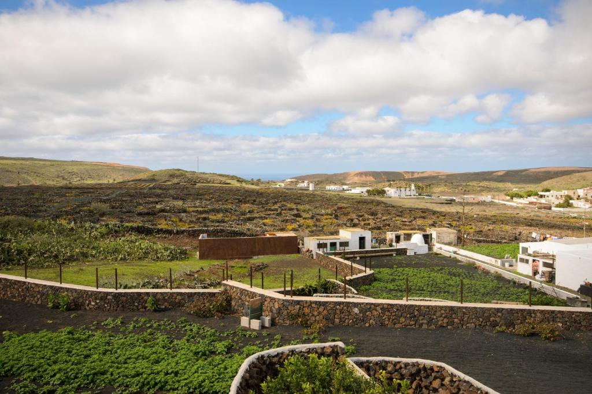
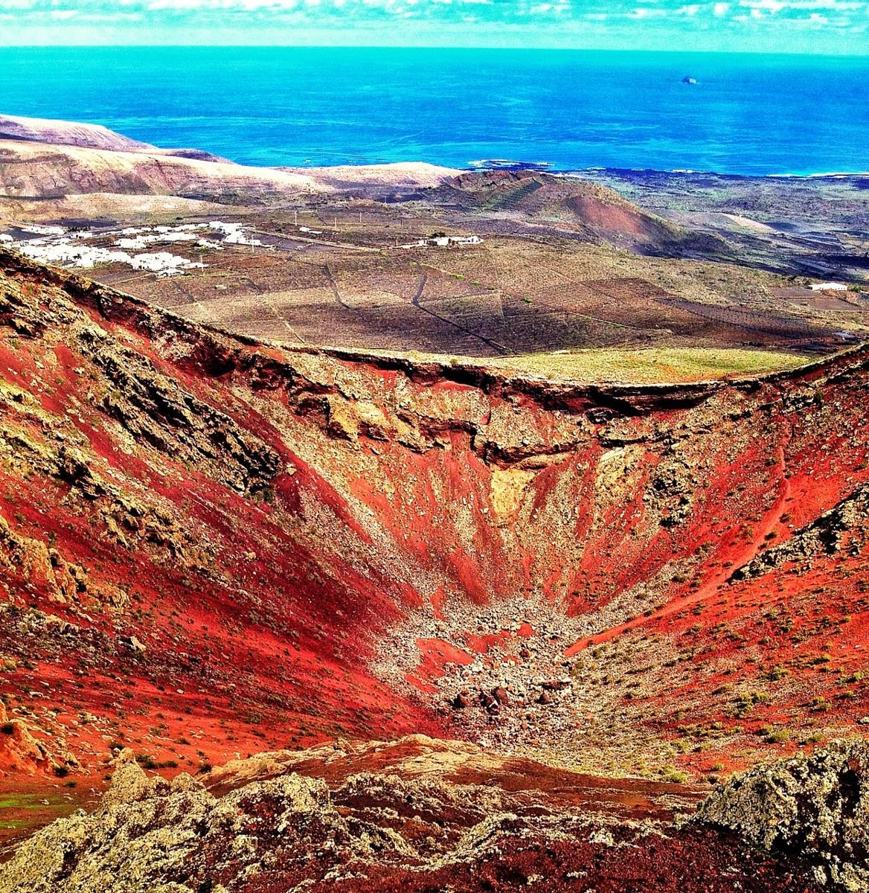

Ye es un pintoresco pueblo que se encuentra en las faldas de el volcán de La Corona. Un sitio hermoso donde es mas probable encontrar la esencia mas pura de la historia lanzaroteña que en otras rutas turísticas recurrentes. Originalmente, este pueblo fue una dehesa, según consta en un antiguo documento de 1576 conservado en el Archivo de Teguise, en el que Agustín de Herrera y Rojas, señor feudal de Lanzarote, legaba la propiedad a su hija Constanza.